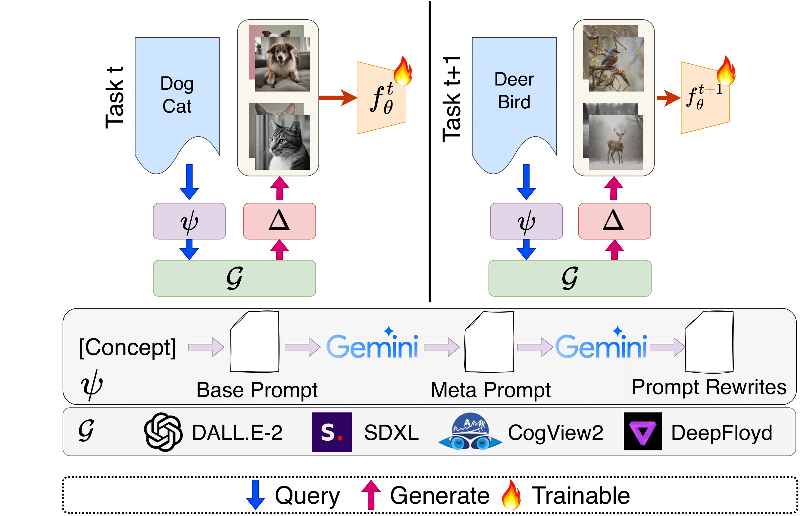

|
I'm an incoming MS. student at at Seoul National University advised by Prof. Jonghyun Choi. My research focus is on developing realistic continual learning methods for large models. I received my B.S. in Computer Science from Yonsei University under the supervision of Prof. Jonghyun Choi. The areas I am currently exploring include:
|

|
|  |
Minhyuk Seo, Diganta Misra, Seongwon Cho, Minjae Lee, Jonghyun Choi, arXiv [pdf] [bibtex] |
-
1st Place in Continual Test-time Adaptation for Object Detection - VCL Workshop @ ICCV 2023 [technical report]
|
This template is from Jon Barron. |